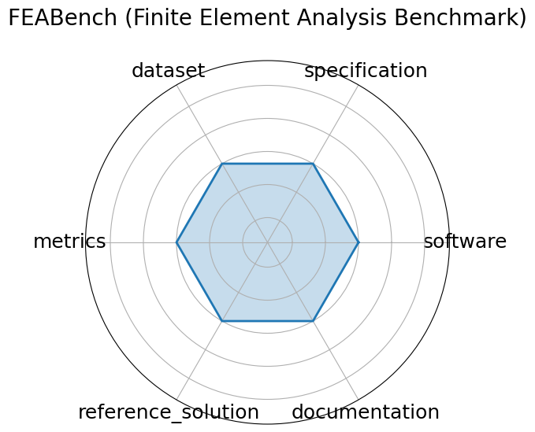

Edit: edit this entry
Date: 2023-01-26
Name: FEABench Finite Element Analysis Benchmark
Domain: Computational Engineering
Focus: FEA simulation accuracy and performance
Keywords: finite element, simulation, PDE
Task Types: Simulation, Performance evaluation
Metrics: Solve time, Error norm
Models: FEniCS, deal.II
Citation:
Nayantara Mudur, Hao Cui, Subhashini Venugopalan, Paul Raccuglia, Michael P. Brenner, and Peter Norgaard. Feabench: evaluating language models on multiphysics reasoning ability. 2025. URL: https://arxiv.org/abs/2504.06260, arXiv:2504.06260.
bibtex: ``` @misc{mudur2025feabenchevaluatinglanguagemodels,
title={FEABench: Evaluating Language Models on Multiphysics Reasoning Ability},
author={Nayantara Mudur and Hao Cui and Subhashini Venugopalan and Paul Raccuglia and Michael P. Brenner and Peter Norgaard},
year={2025},
eprint={2504.06260},
archivePrefix={arXiv},
primaryClass={cs.AI},
url={https://arxiv.org/abs/2504.06260},
}```
Ratings:
Software:
Rating: 4
Reason: Code is available, but poorly documented
Specification:
Rating: 1.5
Reason: Output is defined and task clarity is questionable
Dataset:
Rating: 4
Reason: Available, but not split into sets
Metrics:
Rating: 5
Reason: Fully defined metrics
Reference Solution:
Rating: 4
Reason: Three open-source models were used. No system constraints.
Documentation:
Rating: 5
Reason: In associated paper
Average Rating: 3.917
Radar Plot: 